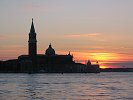
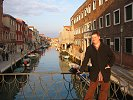

|
|
|
lornaland.co.uk Holidays Photo Gallery Lornaland Natter USA 2005 Journal Menu...Venice Pictures |
Venice7th January - 10th January 2006Saturday 7th January 2006We woke at 3.30am for a quick shower and we were on our way to the aiport by 4.10am. Checked in, we headed off in search of food and treated ourselves to an American Breakfast at Frankie & Benny's. All of a sudden it was 5.40am and we had 10 minutes to get to the gate. We made a quick dash to WHSmiths for a new book for me (Sophie Kinsella's Undomestic Goddess) and some drinks for the plane, and some travel adapator plugs, and some chewing gum... Eventually, at 5.50am - the time we were were due at the gate, we went in search of our gate. Panic set in when we saw the signs for a shuttle service. We did make it in time, despite having to run all the way up the stairs and along to the end where our gate was, and even had to que before boarding! Onboard I felt completely exhausted and tired and had trouble keeping my eyes open. After a flight time of 1 hour 45 minutes, we eventually landed in Venice's Treviso Airport, though I don't think airport is the right term, more like large patch of land and small hut. There had to be a catch at getting flights for 2p each and the airport was it. We had to get the ATVO bus from the airport into Venice which took another hour. Once we arrived in Venice, we set off in search of the Vaparetto. We made the initial mistake of going in the wrong direction (or should that be less scenic route) so we quickly changed and headed to San Marco square along the Grand Canal. We'd realised over breakfast that we didn't have any information on our hotel so our first stop was the tourist information centre. We found our hotel, the All'Angelo in a good location off San Marco square. Still feeling exhausted, we set the alarm for 3.30pm and then settled down for a little nap.  We set off for our first wander round Venice and managed to get as far as San Marco Square where we stopped for a drink. It was getting a bit too chilly to sit outside so we opted for the warmth of Cafe Lavena. Fuelled up, we continued our wandering and ended up at the Rialto Bridge. We crossed over the bridge and soon became aware that we had no idea where we were. After about an hour, we found the Grand Canal and could see a Vaparetto stop. When we got there, we couldn't believe it. We were back at Ple.Roma, the bus station we'd arrived at this morning! We jumped on a Vaparetto and headed back to San Marco where I decided that we should wander back to our hotel parallel to the square to check out the restaurants. Unfortunately Venice doesn't work like that and for the second time in a few hours we were lost. For dinner we decided to take the easy option and head to one of the hotels restaurants and take advantage of our 20% reduction. We chose the Grotto Taverna and both ordered pizza. Dan was pleased when his came and he found that the words he hadn't understood on the menu, were infact his favorite toppings - anchovies and olives. Feeling very tired we finished our meal and went back to our room. After a few chapters of our books, we were both alseep. Sunday 8th January 2006 (...by Dan)Our first full day in Venice was quite a busy one, but not so busy that we didn't have time for lots of sleeping. We woke up at aruond 10.00am and headed for breakfast in the hotel, after which we fell asleep again! We finally made it out of the hotel at about 1.00pm. The first stop was at a cafe in St Mark's Square where I had a very strong espresso and Lorna treated herself to a "punch", sort of a mulled liquer which smelled very strong to me.  We made a plan of action while watching people feed the rather nasty looking pigeons. First destination was Murano where Venice's glass makers are based (they moved there to prevent fires in Venice proper) Glass making is a very skillfull job and we were very impressed to see a demonstration of glass blowing and sculpting. However, most of the glass products on sale in the shop were utterly horrible, and all of them were stupidly expensive. We left empty handed and strolled the deserted Sunday streets of Murano before heading back to Venice. The best thing you can do to get a feel of Venice as a city is to walk around. After jumping off the Vaparetto we walked via a winding route back to Piazza San Marco, by which time it was getting dark. We only made one stop on our way, in a little cafe for a very late lunch (lasagne for Lorna and Spaghetti Carbonara for me) We ended our epic stroll with a Bellini cocktail at Harry's Bar. Harry's is another haunt of international playboy, author and adventurer Enest Hemmingway. It seems that everywhere he used to drink remains preserved in beautiful art deco style to this day. Bellini's are a speciality champagne cocktail made with peach juice. Obviously only the best ingredients are used as they cost 14 Euros each! (£10 in proper money) After Harry's we headed back to the hotel to freshen up and relax before making our way out for dinner. Eventually we found a lovely little restaurant to the West of the Rialto Bridge. A traditional Italian dinner consists of three courses, not including dessert. We had: mozerlla & tomato salad, sardines & onions, spaghetti ragu, gnocci salmone and a we both opted for a steak. All washed down with a litre of red wine. Utterly stuffed we walked back to the hotel via the Rialto Bridge and fell asleep. Monday 9th January 2006We woke up at 9.30am and headed for breakfast at 10.00am. This time though we didn't go back to sleep and managed to be out of the hotel before midday. We headed straight for St Mark's Basillica, wandering around the museum and out onto the balcony first before heading inside properly. The views from the balcony were great and we took lots of pictures. The poo however was not and I managed to put my hand in some! Yuck! Inside the basillica was amazing, the whole roof was covered in elaborate mosaics surrounded by gold. We lit a candle before we left. We found the only cafe open in St Mark's Square and had our usual - an espreso for Dan and a hot punch liquer for me (mandarin this time). After coffee we wandered to the Vaparetto and caught it to the Rialto Bridge where we wanted to visit the market. After wandering for a while we realised we were on the wrong side of the bridge. Not that it mattered that much, the markets didn't seem to be on today. We wandered some more in search of shops selling pasta and booze without much sucess. Eventually we arrived in a familiar square - the one we'd had lunch in yesterday so we decided to eat there again. This time Dan had tagletelle with meat sauce and I had raviolli with tomato sauce washed down with a nice cool glass of beer and a red wine. Lunch finished and most of the shops still having their siesta, we made our way back to the hotel. An hour later, and some more layers for Dan, we headed back onto the streets if Venice in search of shops again. Venice is a complete maze. You can wander round for hours and still end up back where you started from. This time, although we'd found some places we'd already been, we also came across some new places. The good news was that we did manage to find some pasta, dried tomatoes and cheap Amaretto. We also found a supermarket quite near our hotel and stocked up on more pasta, cheap Limencello and so,me biscuits. We finally made it back to our hotel to drop of the bags and relax before dinner. We decided to take advantage of our complimentary 15% discount at the hotel lounge bar which we were given at check-in. The bar itself was actually in the hotel across the way from ours, a nice room on the second floor. The prices did seem a bit high but when's Dan's mojito came it was quite strong so he wasn't too upset. My bellini was nice too and we got some nice little canapes and crisps. After drinks we searched for somewhere for dinner. Cheapness was what we were looking for but it felt like a cop out to go back to Grotty Pizza's. Instead we decided to get our 20% voucher and try one of the hotels other restaurants. We opted for the tourist menu at Restaurant All'Angelo, having liked the idea of 3 course meal but wanting to be cheap. 3 course for 16 Euros. We had sardines, bruschetta, penne in a spicy sauce followed by sole and roast chicken. Not too bad. We even treated ourselves to a dessert as it was our last night and Dan silll hadn't tried in real Itallian Tiramisu. After dinner we took a Vaparetto up to Rialto Bridge with a plan of strolling home and popping into a nice drinking establishment along the way. We didn't find anything so we just went back to the hotel to sleep. Tuesday 10th January 2006Our last day in Venice. We woke up half an hour earlier than usual at 9.00am and after some quick showers, we were down to breakfast at 9.50am. Our bags packed, we left them in reception and headed off to see Doges Palace. The Palace was full of rooms covered in elaborate art & gold and we finally got to see the Brige of Sighs - it's a bridge linking the palace with the prisons and it got it's name from the sighs prisoners made when they crossed. The Bridge of Sighs was one of the things I really wanted to see while in Venice but I have to say I was a little disappointed. Also disappointed was Dan as it seems we have lost our guidebook. After Doges Palace there was just enough time for us to have a final drink in St Mark's Square. Dan had his usual espresso and I opted for a Vin Brulee (mulled wine) instead of my usual punch. We finished our drinks just after 12.oopm and returned to the hotel to collect our bags. Not wanting to miss the bus to the airport as the next one arrived 10 minutes after our plane took off, we boarded a Vaparetto and headed to the bus station at Pizalle Roma. 1.53pm - We're now on the bus to Treviso Airport which is 16km away. The driver must think it is cold outside and has the heating on full blast. I am boiling! 3.40pm - We're in the glamorous surroundings of Treviso Airport, where I got royally ripped off buying some sandwiches and am now 30 cent short for some crisps. I am very very bored. There's nothing to do here. I've been in the shop twice but it only consists of 3 rows. Dan is reading his booked but I finished mine before we left for dinner last night. Still another 50 minutes till take off then a 1 hour 45 minute flight. Boohoo! 5.25pm - We're on the plane now almost an hour into the flight. I've read the Ryanair magazine and a few pages of Harry Potter over Dan's shoulder. And to add to my boredom, I'm hungry! We should be landing in an hour. Just had a disaster with one of my contact lenses. It folded itself up into the corner of my eye. Luckily, it fell out and I managed to take the other one out. Must remember not to fly wearing contact lenses. 5.55pm - Announcement from the flight deck tells us that we've just left Belgium and should arrive 10 minutes early. |